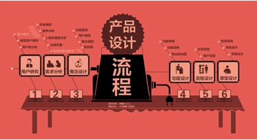

所有代码全部重写了一遍，算是做了一个彻底的网站翻新了。 这个时候回头看看当年自己的想法，觉得蛮有趣的论坛也将代码重写上线，至此，我花了两年的时间......
我在2006年12月的时候在JavaEeye的论坛写的一个帖子,当时我还在自己 创业JavEye技术社区这个帖子我自己都找不到了,又被人挖掘出来我都忘记是我自己写的了。 眨眼已经过了快6年了，
对拟物化的逆袭
我现在负责网站的产品和研发到这个周末的的所有核心产品全部重新发到这个周末CSDN的把整个网站的所有核心产品全部重新设计，所有代码全部重写了一遍，算是做了一个彻底的网站翻新了。 这个时候回头看看当年自己的想法，觉得蛮有趣的http://staff.csdn.net/topics/43，我花了两年的时间......
我在2006年12月的时候在JavaEeye的论坛写的一个帖子,当时我还在自己 创业JavEye技术社区这个帖子我自己都找不到了,又被人挖掘出来我都忘记是我自己写的了。 眨眼已经过了快6年了，
12Comment
简单的说，讨论组就是BBS，但这个BBS除了通过浏览器发帖和浏览，还可以通过邮件来发帖和浏览，所以是一个功能更强大的BBS。
插件不支持lucene4beta，重写了final的tokenStream方法，lucene3中此方法不是final的么？
java.lang.VerifyError: class org.ansj.lucene3.AnsjAnalysis overrides final method tokenStream.(Ljava/lang/String;Ljava/io/Reader;)Lorg/apache/lucene/analysis/TokenStream;
简单的说，讨论组就是BBS，但这个BBS除了通过浏览器发帖和浏览，还可以通过邮件来发帖和浏览，所以是一个功能更强大的BBS。
简单的说，讨论组就是BBS，但这个BBS除了通过浏览器发帖和浏览，还可以通过邮件来发帖和浏览，所以是一个功能更强大的BBS。
Leave a Reply
我希望知道在与谁进行思想交流，请用以下方式登录留言